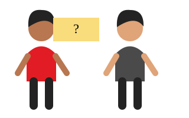
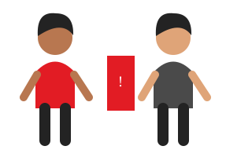
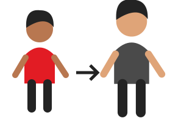

Matchbook Learning · Morning Meeting
Matchbook Learning · Morning MeetingWeekly videos & Do Now – First 5
Use these recurring resources every week. This week’s Connect screens use illustrated fictional scenarios. Use First 5 during arrival; select a brief Relax or Excite excerpt within the two-minute Regulate phase as appropriate.
Start the day
Illustrated decision scenes
Original classroom illustrations based on the supplied curriculum. No real incident footage or physical reenactments are used.
My Body. My Boundary.

Open slide 4 to examine choices, discuss evidence, and name a safe response.
When A Prank Crosses The Line

Open slide 4 to examine choices, discuss evidence, and name a safe response.
The Crowd Has Power

Open slide 4 to examine choices, discuss evidence, and name a safe response.
Repair Is An Action
Open slide 4 to examine choices, discuss evidence, and name a safe response.